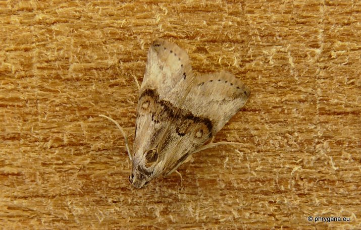
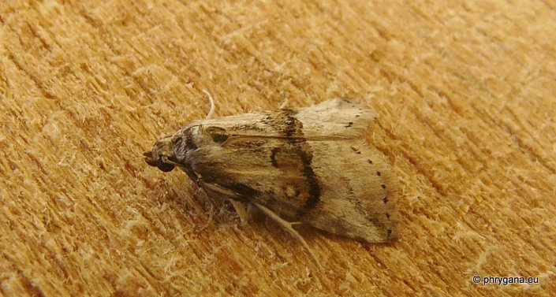

| PHRYGANA | Fauna | Flora |
additions nouveautés |
espèces species |
contact -
info - commentaires phrygana1 (at) gmail.com |
| Particularités crétoises | Galles et mines |
| Zebeeba falsalis (Herrich- Schaffer 1839) |
| 288 | Fauna | EREBIDAE | Rivulinae | Zebeeba Kirby 1892 |
|
 Zebeeba falsalis Melambes (Agios Giorgos) 13 novembre 2011 |
| fr: la Noctuelle de l'asperge | |
| Couleur de fond beige avec une bande médiane brun foncé bordée de brun clair | |
| Chenille oligophage: Asparagus aphyllus subsp. orientalis (les baies) | |
| Espèce bi -?trivoltine | |
| Période de vol: novembre | |
| Statut en Crète: indigène | |
| Biotopes en Crète: phrygana, maquis, garrigue. | |
| Distribution: région Méditerranéenne, Afrique du Nord, Moyen-Orient | |
| Note: vient à la lumière | |
|
 Zebeeba falsalis Melambes (Agios Giorgos) 13 novembre 2011 |
| 20 novembre 2011 |
| © paul fontaine -- © Phrygana.eu 2007 -- 2013 |